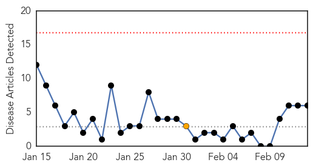
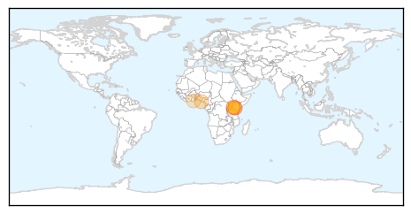
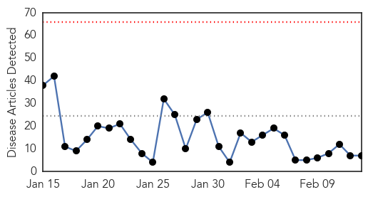
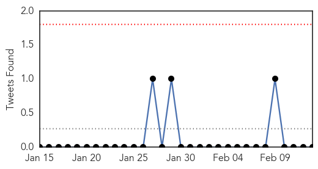
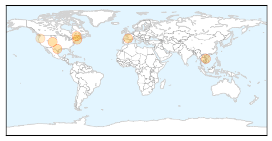
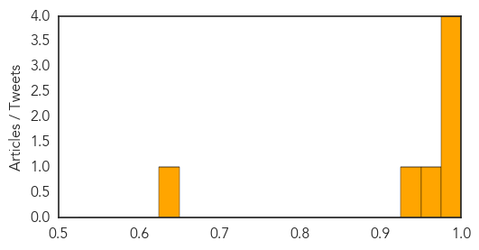

Cholera
30-Day Web Trend
0 alerts, 1 warnings

30-Day Twitter Trend
4 alerts, 0 warnings

Article Locations
Article Confidences

Top Articles:
Top Tweets:
-
No tweets found for Feb 13, 2015
Influenza
30-Day Web Trend
0 alerts, 0 warnings

30-Day Twitter Trend
0 alerts, 0 warnings

Article Locations
Article Confidences
Top Articles:
- 1.000
- FluWatch report: February 1 to February 7, 2015 (Week 5)
- 1.000
- Schools report an increase in illness-related absences
- 0.999
- Colorado sees record-high flu hospitalizations
- 0.977
- Valley health officials gearing up to tackle flu season Medicine: An estimated 400,000 doses of vaccine to be handed out this year.
- 0.974
- France in grip of flu epidemic as vaccine proves ineffective
- 0.946
- Flu season: Missing the mark
- 0.649
- Avian flu found in Deschutes County
Top Tweets:
-
No tweets found for Feb 13, 2015